#LYFE
Beyond work.
I was born in Ashgabat and live in Seattle. A bit about what I do and care about.
Soccer has always been my favorite sport to play, both outdoor and futsal, and I've been an FC Barcelona supporter for as long as I can remember. During the week I spend time at the gym, play pickleball and ping-pong with friends, and snowboard in the winter. Love music and can spend hours curating it.
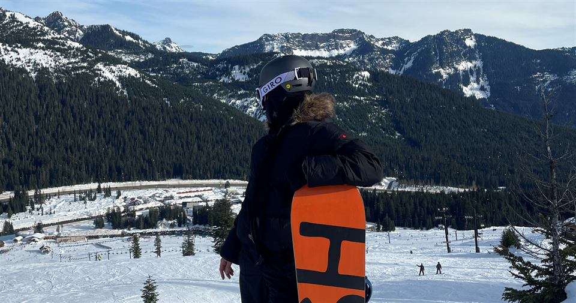
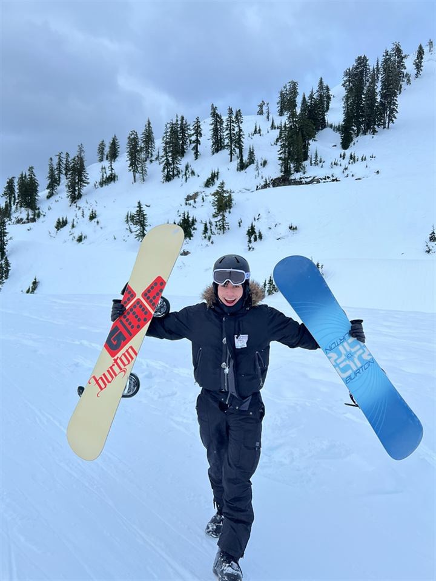
I grew up in Ashgabat, Turkmenistan before moving to the US in 2014. With family spread across different parts of the world, travel has never felt optional to me, and I never ceased to enjoy it.
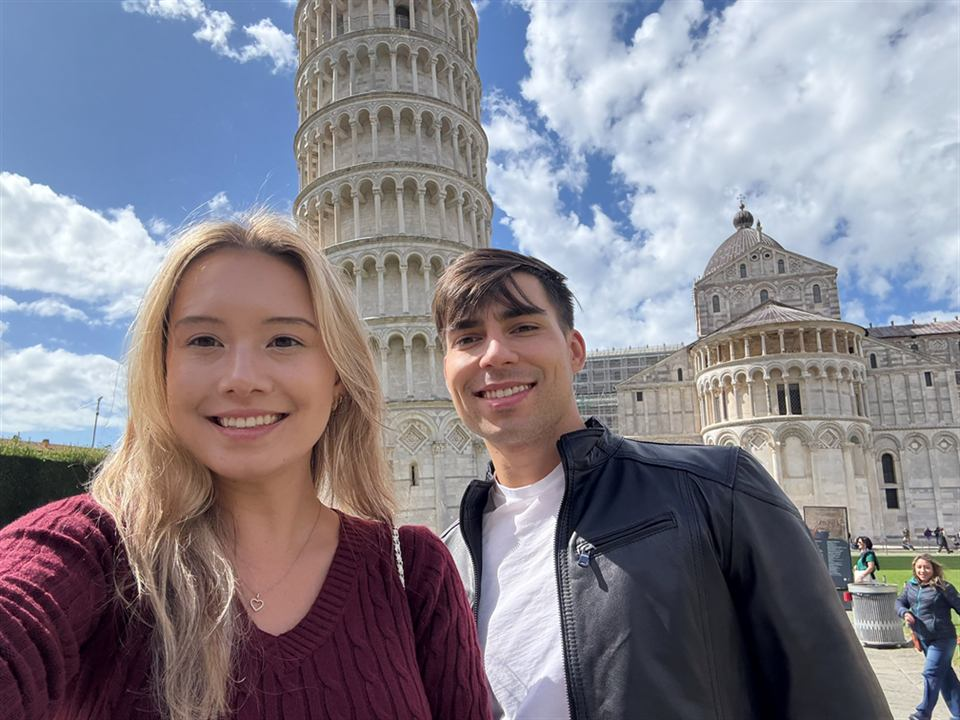
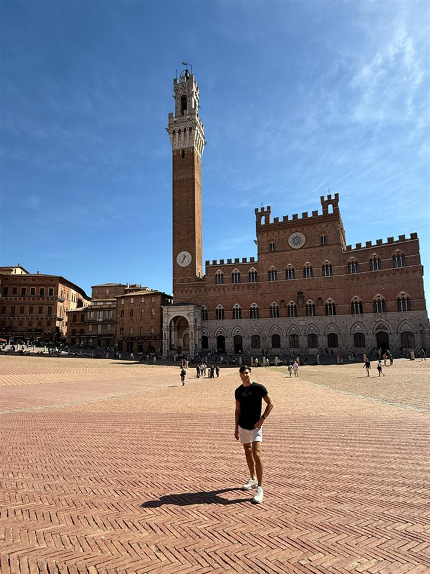
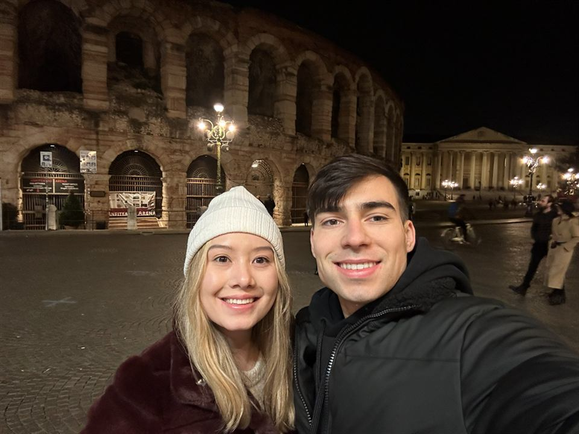
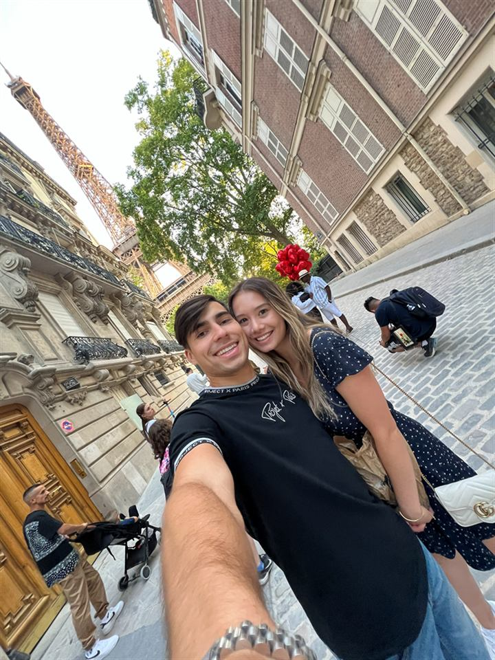
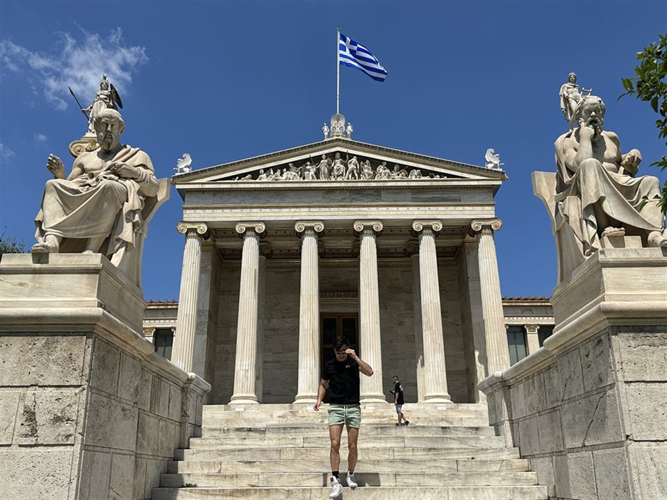
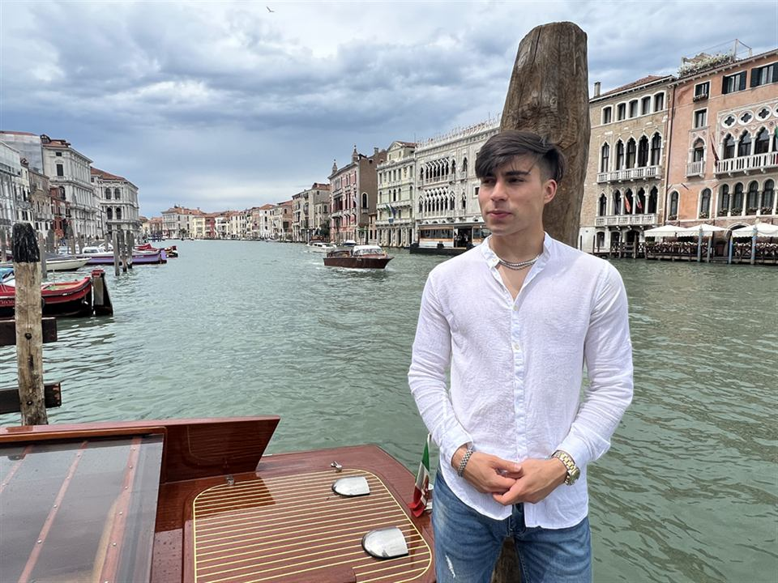
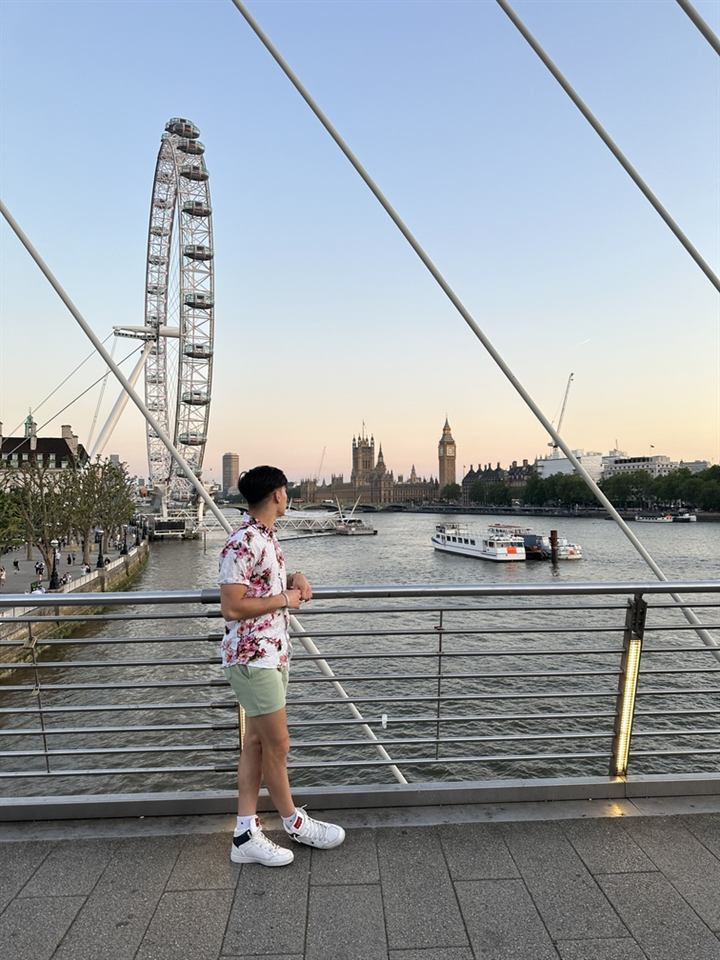
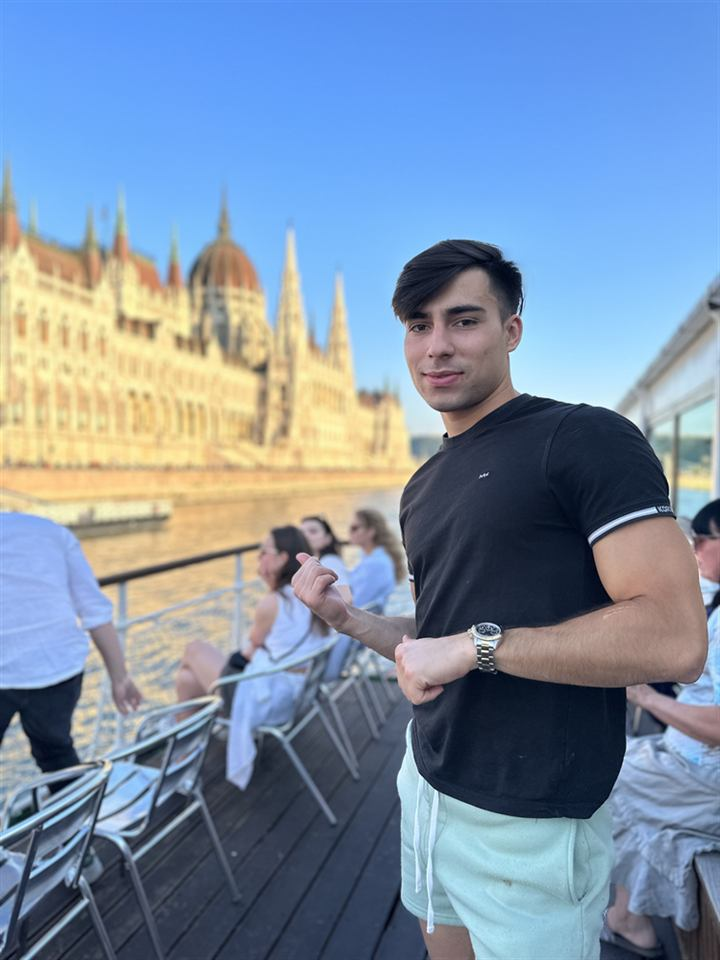
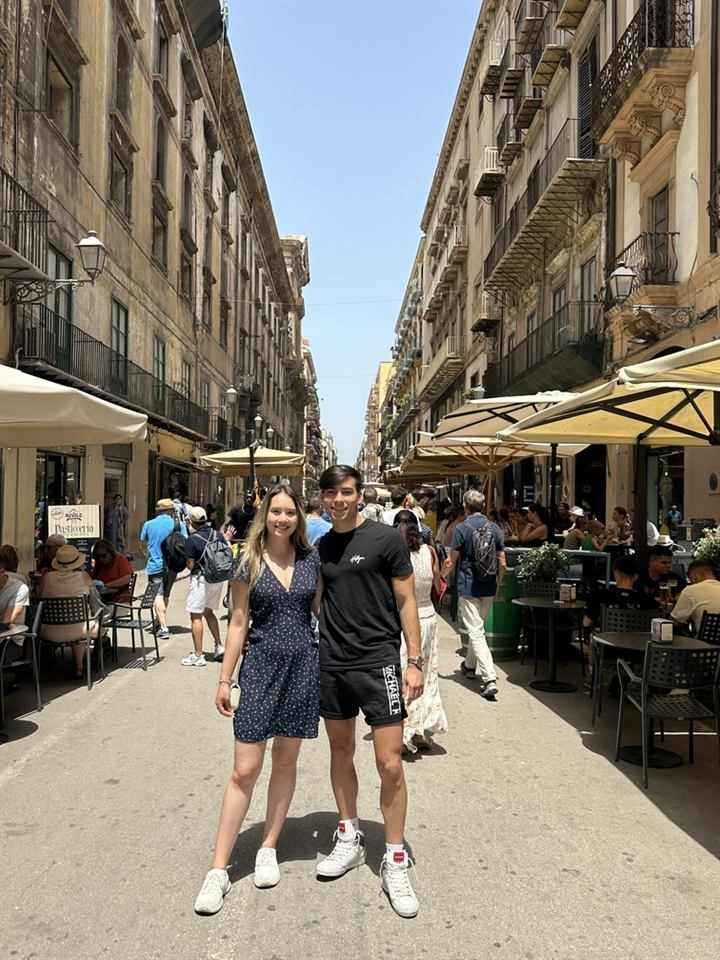
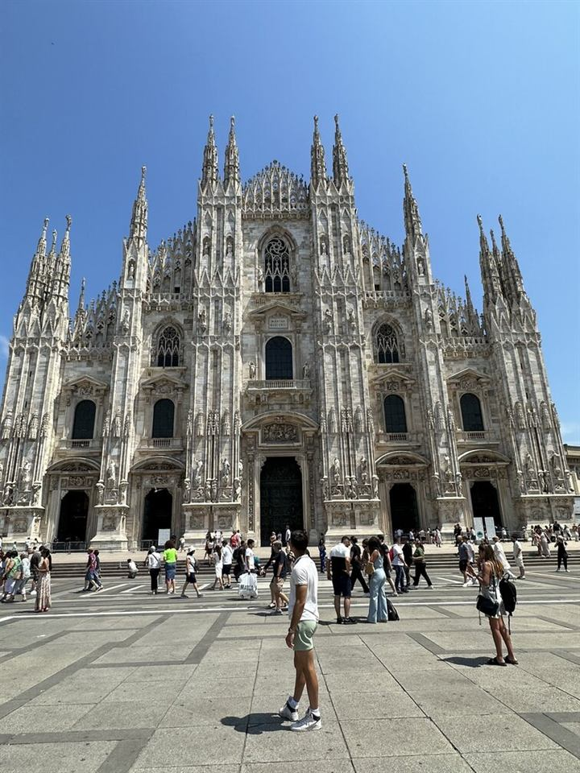
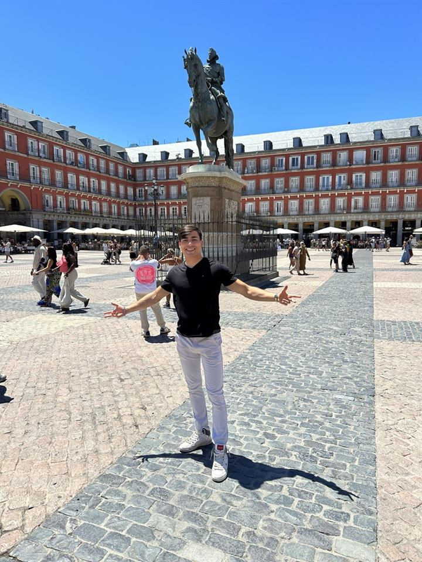

2019 - 2023
University of Washington
B.S. in Computer Science, Paul G. Allen School
Earned my B.S. in Computer Science, completed the STARS program, served as a WSOS Lead mentoring incoming scholars, and earned Dean's List honors 8 times.
In Progress
Georgia Institute of Technology
M.S. in Computer Science, Machine Learning
Focusing on machine learning systems, GPU hardware and CUDA performance, reinforcement learning, and deep learning architectures.
Most of my reading goes toward older worlds and philosophy. I spend time with Ancient Greece and Rome, Viking history, Greek and Norse mythology, and classic dialogues from Plato and Socrates.